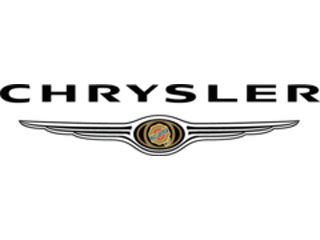

У 1998 році Daimler-Benz AG (німецька компанія, виробник розкішних автомобілів) та Chrysler
Corporation
(американська компанія) оголосили про плани об'єднання на 36 мільярдів доларів США, задля
створення
глобального автомобільного гіганта.
В той час, як угода була розроблена як злиття, насправді угода фактично була придбанням Chrysler
акціями
компанії Daimler-Benz.
Очікувана економія від обєднання не змогла стати реальністю.

Одним з головних питань було
розповсюдження.
Відмова багатьох продавців Mercedes додати транспорт від Chrysler до їхнього комплексу
пропозицій
перешкоджало проникненню на ринок недорогих пропозицій від Chrysler, таких як Dodge Neon та Jeep
Grand
Cherokee у Європу.
Ще одна велика проблема полягала в тому, що американським працівникам платили більше ніж своїх
німецьким
колегам, іноді у два-три рази більше.
Шремпп переглянувши оцінки угоди у 2000 році, заявив у статті "Financial Timers", що "Для злиття
різних
класів виробництв була необхідна підтримка працівників Chrysler та американської громадськості,
але це
ніколи не було можливим".
Заява викликала обурення багатьох в рядах Chrysler, а також серед її колишніх та нинішніх
акціонерів,
які
відчували, що їм збрехали щодо умов угоди.
Капіталізація комбінованої компанії впала швидко, аж до того, що Daimler-Benz вже був таким
самим як і
до
початку угоди.
У 2000 році Керкоріан власник 13.75% акцій компанії подав позов у розмірі 9 мільярдів доларів
США,
стверджуючи, що керівники брехали про умови злиття і що він ніколи не проголосував би за це,
якби знав,
що
Крайслер буде захоплений Daimler-Benz.
Він врешті-решт програв позов, але на це пішло майже п’ять років юридичної суперечки. Крім
позову
Керкоріана, акціонери подали ще не один десяток інших позовів.
Більшість судових процесів вимагали відшкодування збитків через падіння вартості акцій після
угоди
DaimlerChrysler. Один з позовів був врегульований у 2003 році за 300 мільйонів доларів США.